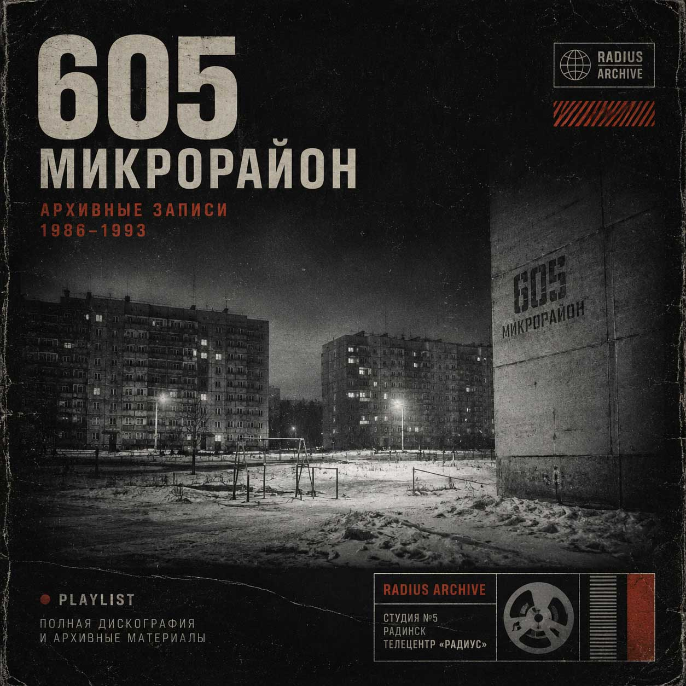
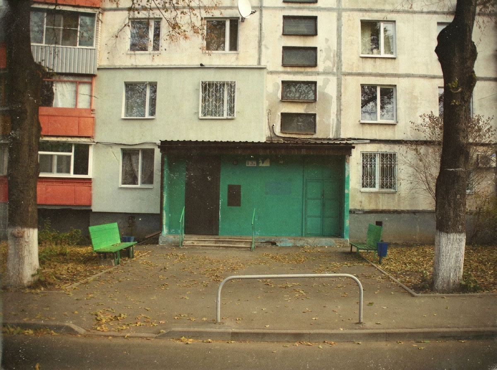
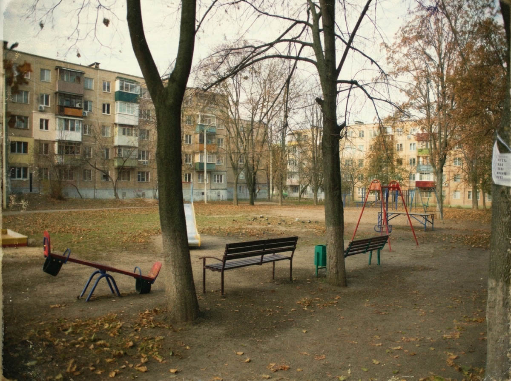
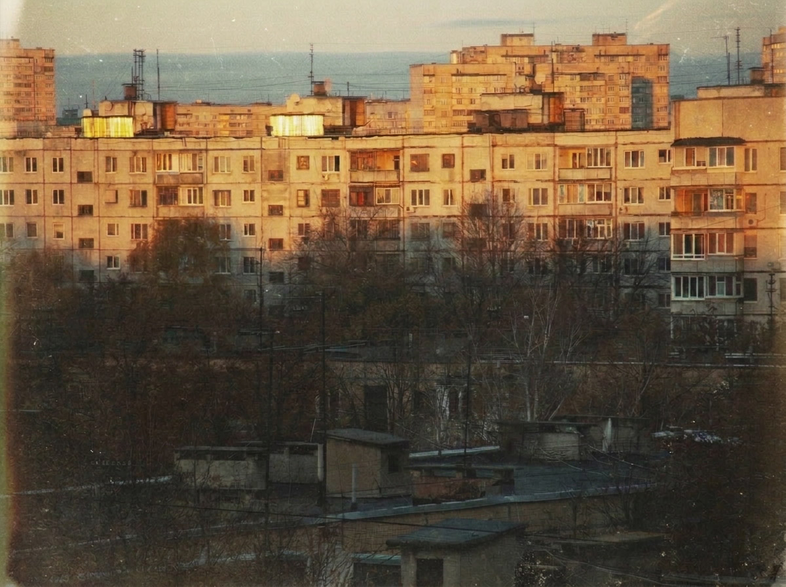
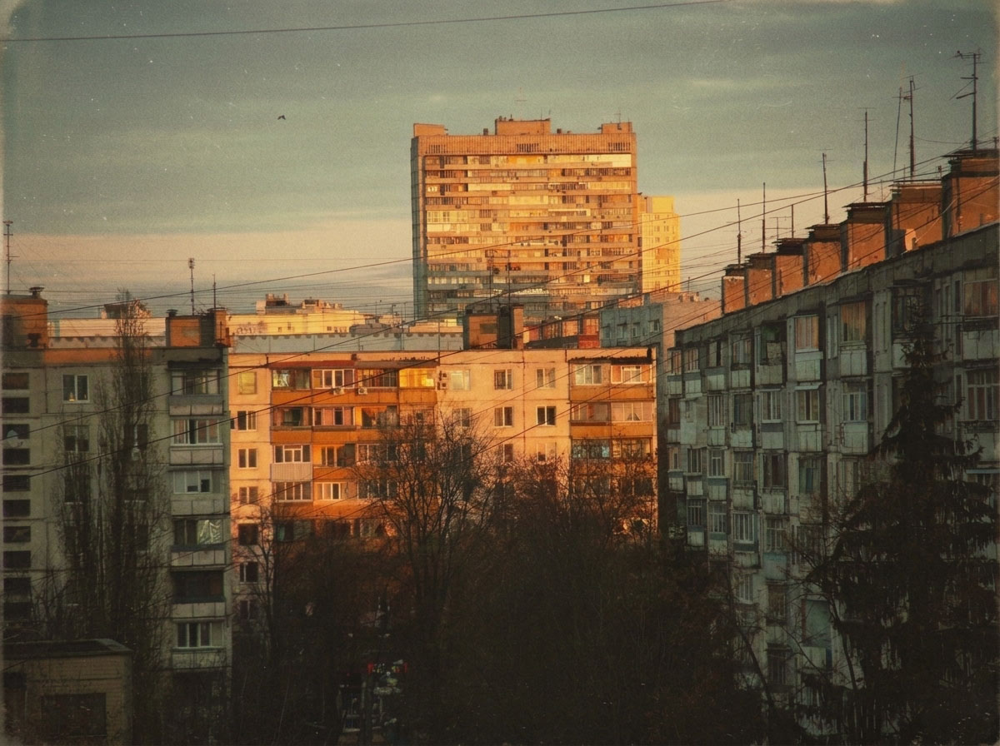
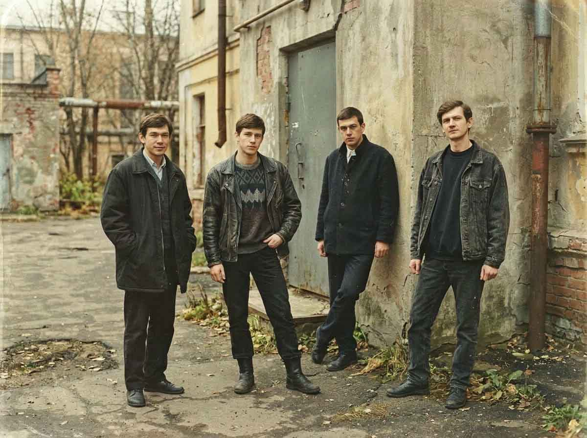

605 Микрорайон
Постпанк · Альтернативный рок
ДОСТУПНО / СЛУШАТЬ
Утерянные записи пост-панка и холодной волны из забытого городского архива. Шум кассетной плёнки, подвальные репетиции, пустые дворы и воспоминания о городе, которого, возможно, больше не существует.
СЛУШАТЬ 605 МИКРОРАЙОН
Также доступно через дистрибуционную сеть RADIUS ARCHIVE на платформах: TikTok, Pandora, KKBOX, iMusica, iHeartRadio, Anghami, JioSaavn, AWA, Tencent Music, NetEase Cloud Music, Facebook Audio Library, Mixcloud, Boomplay, Snap, Peloton, Audiomack, JOOX, FLO, Tuned Global, YouTube Content ID и Facebook Rights Manager.
Архивные записи (1986–1993)
- 01 Пустые дворы
- 02 Здесь был город
- 03 Я увидел сон
- 04 Встретимся
- 05 Танцую сам с собой
- 06 Потерянный эфир
- 07 Возле пятого подъезда
- 08 Не выключай магнитофон
- 09 Пустые дворы (Акустика)
- 10 Здесь был город (Cold District Remix)
Это наше лето (Мини-Альбом, 1998)
- 01 Наше лето
- 02 Вечерние новости
- 03 Здесь будет жарко
> НАЙДЕНО В АРХИВЕ: Городские фотографии, 1986–1998.

РИС. 01 — Вход в 5-й подъезд, 1988
РИС. 02 — Пустая площадка, 1990
РИС. 03 — Вид на район, 1990
РИС. 04 — Вечерние окна, 1990
РИС. 05 — Группа 605 Микрорайон, 1993> РАССЕКРЕЧЕННЫЕ ДОКУМЕНТЫ: Фрагменты архива.
ФРАГМЕНТ ВОСПОМИНАНИЯ: 605 МИКРОРАЙОН (1986–1993)
«Я вырос в 605-м микрорайоне. Тогда это был просто мой мир. Дворы, которые казались бесконечными, хотя их можно было пересечь за пять минут. Окна, где всегда работал телевизор, даже если его не было видно. Лето, которое тянулось дольше календаря, и зимы, которые, казалось, висели в воздухе. Это не ощущалось как "микрорайон". Это была отдельная реальность, со своими маршрутами, голосами и тишиной между ними».
— Из личных записей неизвестного жителя, без даты.
АРХИВНАЯ ЗАПИСКА: АКУСТИЧЕСКИЕ ЗАПИСИ (1993)
«В ходе работы с архивом Радиус ТВ были обнаружены две ранее неизвестные акустические записи группы 605 Микрорайон. Согласно сохранившимся служебным заметкам, обе, вероятно, были записаны в 1993 году в той же небольшой студии, где делались другие акустические сессии группы. На лентах сохранилась естественная атмосфера помещения, характерный шипение магнитной ленты и несколько дублей, записанных практически без подготовки».
— Из архивного журнала Телецентра «РАДИУС», 1993.
ПОЛЕВЫЕ ЗАМЕТКИ: «ЭТО НАШЕ ЛЕТО» (1998)
«Лето 1998 года. Три записи, запечатлевшие разные стороны одного периода. "Наше лето" приносит июньскую жару, ночные поездки, разговоры о будущем и планы, которые в то время кажутся совершенно обычными. "Вечерние новости" тише: кухня, чайник на плите, телевизор на фоне, угасающий дневной свет и новости, приходящие из внешнего мира, пока дома ничего особенного не происходит. Затем "Здесь будет жарко" переносит нас в небольшой зал, где старые усилители, перегруженные динамики и плотно набитая толпа превращают обычный концерт в несколько часов шума».
— Из аннотации к мини-альбому, 1998.